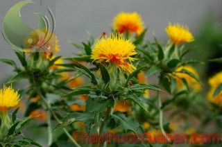

Bài thuốc chữa rối loạn kinh nguyệt
Bài thuốc chữa rối loạn kinh nguyệt
 Vị thần hạnh phúc cho các cặp vợ chồng hiếm muộn
Vị thần hạnh phúc cho các cặp vợ chồng hiếm muộn
Tên khác:
Tên khác: Vị thuốc Hồng hoa còn gọi Hồng lam hoa, Đỗ hồng hoa, Mạt trích hoa, Hồng hoa thái, Tạng hồng hoa, Kết hồng hoa, Sinh hoa, Tán hồng hoa, Hồng lan hoa, Trích hoa, Thạch sinh hoa, Đơn hoa, Tiền bình hồng hoa, Tây tạng hồng hoa, Lạp hồng hoa, Nguyên hồng hoa, Hoàng lan hoa, Dương hồng hoa (Trung Quốc Dược Học Đại Từ Điển Cây Rum).
Tên khoa học: Carhamus tinctorius L.
Họ khoa học: Họ Cúc (Asteraceae).
Cây hồng hoa
(Mô tả, hình ảnh cây hồng hoa, phân bố, thu hái, thành phần hóa học, tác dụng dược lý...)

Mô
tả:
Cây hồng hoa là một cây thuốc quý. Cây thảo cao hơn 1m, thân nhẵn, đứng thẳng, có vạch dọc, trên có phần cành. Lá mọc so le gần như không có cuống, bẹ, đầu chót nhọn như gai, mép có răng cưa nhọn không đều, mặt lá trơn màu xanh sẫm, gân chính giữa lồi cao. Cụm hoa gồm nhiều hoa nhỏ, màu đỏ cam, đẹp, họp lại thành gù hình đầu, ở ngọn và chót cành, lá bắc có gai. Hoa có ống dài hình tên, trên có 5 cánh đỏ như tua sợi, hoa cái giữa có nhụy vàng, kết quả vào dưới ống. Quả bề hình trứng có 4 cạnh lồi. Mùa hoa tháng 6-8, mùa quả tháng 8-9.
Phân bố

Trước đây đã được trồng nhiều ở Hà Giang Việt Nam, nay đang được phát triển trồng nhiều nơi. Trồng bằng hạt vào mùa xuân.
Phân biệt:
Cây Tạng hồng hoa, còn có tên là Phiên hồng hoa, hoặc Lệ hồng hoa, có nhiều ở Tây Tạng và Âu Uyên, thuộc họ đuôi Điều đó là cây thảo sống đa niên, ở phần dưới đất thân tròn hình cầu, phình lớn, lá 6-9 phiến, lá hình dãi, không cuống. Vùng gốc có bẹ rộng bọc lại hình vẩy, khoảng tháng 9,10 từ lá nổi lên 2,3 đoá hoa màu hồng nhạt, hoa chia thành 6 phiến màu hồng đậm, nhỏ dài, trụ đầu tam thao, màu hồng tím, nhỏ dài. Công dụng giống như Hồng hoa nhưng tốt hơn và giá tiền đắt hơn nên có nhiều thứ giả. Người ta thường gọi là Tây tạng hồng hoa.
Thu hái, sơ chế:
Đầu mùa hè, khi hoa đang nở, cánh hoa đang chuyển từ vàng sang đỏ thì bắt đầu thu hái, để nơi thoáng gió và nơi có ánh nắng cho khô, hoặc phơi trong râm cho khô là được. Không nên phơi trực tiếp ngoài nắng để khỏi biến màu.
Phần dùng làm thuốc:
Hoa (Flos Carhami).
Mô tả dược liệu:

1- Cánh hoa dạng ống nhỏ dài, khô teo lại như tơ, mút trước xẻ 5 thùy, phiến thùy hình dải hẹp, dài chừng 6,5mm, toàn thể dài hơn 13mm, bên ngoài biểu hiện màu hồng hoặc hồng tím, nhị đực màu vàng nhạt, hợp ôm lại thành dạng ống, ở chính giữa có trụ đầu ló ra màu nâu nhạt, chất nhẹ xốp, có mùi thơm đặc biệt. Hồng hoa có ở tỉnh Hà Tây gọi là ‘Hoài hồng hoa’ rất tốt, cánh hoa dài, màu hồng tím, loại xản xuất ở Tứ xuyên gọi là Xuyên hồng hoa có màu tím, hơi ẩm vàng, trước đây dùng làm thuốc để nhuộm, hiện nay rất thông dụng.
2- Tạng hồng hoa hay Tây tạng hồng hoa, phần dùng làm thuốc là hoa trụ khô, phần nhiều tập hợp thành dạng khối tròn rời, màu hồng đậm, đơn thể hoa trụ nhỏ mà dài, trụ đầu tam hoa, hơi dẹt, mút trước hơi phình lớn, biểu hiện dạng loa kèn, dài chừng 6-10mm, bên ngoài biểu hiện màu hồng đậm, đầu trơn hơi sáng, có mùi thơm đặc biệt, nhai nhổ ra thấy màu hồng tranh. Tạng hồng hoa thu hái vào tháng 9-10.
Bào chế:

Hái về bỏ đài hoa đi, chỉ dùng cánh hoa gói lại thành từng bánh phơi khô, hoặc gĩa nát vắt thành miếng bánh phơi khô dùng gọi là ‘Tiền bính’. Loại chỉ phơi khôdùng không đóng bánh gọi là ‘Tán hồng hoa’.
Bảo quản:

Dễ hút ẩm, hay vụn mốc và đổi màu. Để nơi khô ráo, thoáng mát, trong thùng lọ kín, có lót chất hút ẩm.
Cách dùng:
Muốn thử xem thực giả lấy một cánh Hồng hoa bỏ vào trong chén nước nóng thấy đỏ như máu, phơi hai đến ba lần cũng còn đỏ mới thật là tốt. Dùng sống, cho vào thuốc thang sắc uống để dưỡng huyết, tẩm rượu dùng để hoạt huyết phá huyết.
Thành phần hóa học:
+ Ethyl acetate, Benzene, Pent-1-en-3-ol, 3-Hexanol, 2-Hexanol, 2-Hexenal, 3-Methyl butyric acid, Methylbutyric acid, p-Xylene, O-Xylene, Phenyl acetaldehyde, Nonanal, Terpinen-4-ol, Verbenone, Decanal, Benzothiazole, E, E-2, 4, E, E-2, 4 Decadienal, Methyl cinnamate 1, 2, 3-Trimethoxy-5-Methylbenzene, a-Copaene, 1-Tetradecene, a-Cedrene (Koshi Saito và cộng sự Ca 1991, 115: 5139e).
+ Galatose (Từ Trung Tự, Trung Dược thông Báo 1982 9 (1): 31).
+ Nonacosane, b-Sitosterol, Palmitic acid, (Hoàng Giang, Trung Thảo Dược 1984, 15 (5): 123).
Tác dụng dược lý

Hồng hoa có tác dụng tăng co bóp tử cung rõ rệt, liều lượng nhỏ làm cho tử cung co bóp đều, lượng lớn làm cho tử cung co bóp tăng nhịp, thậm chí làm rung cơ tử cung, đối với tử cung của động vật có thai tác dụng làm tăng co bóp càng rõ. Đối với cơ trơn của ruột, thuốc cũng có tác dụng hưng phấn thời gian ngắn.
Thuốc có tác dụng hạ áp: làm tăng lưu lượng máu dinh dưỡng cơ tim và lưu lượng máu động mạch vành của chó được gây mê.
Thuốc có tác dụng ức chế sự ngưng tập tiểu cầu. Thuốc còn có tác dụng bảo vệ chống nhồi máu cơ tim trên mô hình thắt động mạch vành của chó hoặc gây thiếu máu cơ tim trên chuột bạch lớn.
Vị thuốc hồng hoa
(Công dụng, liều dùng, quy kinh, tính vị...)
Tính vị:

Vị cay, Tính ấm.
Quy kinh:
Vào 2 kinh Tâm Can.
Tác dụng:
Thuốc có tác dụng hoạt huyết khu ứ thông kinh. Chủ trị các chứng đau kinh, kinh bế, sau sanh đau bụng, đau do ứ huyết, các chứng trưng hà tích tụ, đau khớp, ban chẩn.
Sách Khai bảo bản thảo: " Chủ sản hậu huyết vận, cấm khẩu, máu xấu không ra hết, cơn đau thắt, thai chết lưu, sắc với rượu uống"
Sách Bản thảo kinh sơ: " Hồng hoa là thuốc hành huyết chủ yếu. Chủ trị sau sanh huyết vựng cấm khẩu, máu xấu không ra, nghịch lên xung tâm sinh ra hôn mê chóng mặt, cấm khẩu . trong bụng đau do máu xấu không ra hết, thai chết trong bụng, nếu không hành huyết hoạt huyết thì thai không ra. Thuốc có tác dụng hành huyết nên trị được đau bụng, trục được thai ra".
Sách Bản thảo hội ngôn: " Hồng hoa là thuốc phá huyết, hành huyết, hòa huyết chủ trị nhiều bệnh thai sản do huyết hoặc do huyết phiền, huyết vựng, hôn mê không nói được hoặc do máu xấu hại tâm, bụng rốn đau, bào thai không ra, thai chết trong bụng, không có Hồng hoa không trị được".
Sách Dược phẩm hóa nghĩa viết: " Hồng hoa chuyên thông lợi kinh mạch là khí dược trong huyết, vừa có thể tả vừa có thể bổ, nếu dùng lượng 3 - 4 đồng cân thì thuốc quá cay ôn khiến huyết tẩu tán. Cùng với Tô mộc trục ứ huyết, hợp với Nhục quế thông kinh bế, hợp với Qui thược trị đau toàn thân hoặc ngực bụng đau do tác dụng hoạt huyết. Nếu dùng 7 - 8 phân để sơ can, khí trợ huyết hải, đại bổ huyết hư, đó là tác dụng điều hòa huyết, nếu chỉ dùng 2 - 3 phân thuốc vào tâm, giải tà nhiệt ở tâm làm cho huyết được điều hòa".
Chủ trị:
+ Thông kinh ứ trệ, trị bế kinh, sản dịch sau khi sinh không xuống được, thai chết lưu, lở sưng tấy đau nhức, ứ đau do chấn thương.
Liều lượng: 3-10 g sắc uống
Ứng dụng lâm sàng của vị thuốc hồng hoa
Trị bệnh phụ khoa: Rối loạn kinh nguyệt, kinh bế, sau sinh máu xấu không ra hết, dùng các bài:
Hồng hoa tửu: Hồng hoa 10g, sức với rượu chia 3 lần uống. Trị đau kinh.
Hồng hoa 5g, Xuyên khung, Đương qui, Hương phụ, Diên hồ sách đều 10g, sắc nước uống hoặc phối hợp với rượu Đương qui uống, trị đau bụng kinh.
Hồng hoa 3g, Ích mẫu thảo 15g, Sơn tra 10g, cho đường đỏ vừa đủ uống. Trị sau sanh máu xấu không ra hết.
Trị đau sưng tấy do chấn thương ngoại khoa: dùng các bài:
Hồng hoa, Đào nhân, Sài hồ, Đương qui đều 10g, Đại hoàng 8g, rượu và nước mỗi thứ một nửa sắcuống
Hồng hoa, Đào nhân, Đương qui vĩ đều 120g, Chi tử 240g, tán bột mịn trộn đều với giấm lượng vừa đủ đun nóng đắp chỗ đau.
Trị huyết khối ở não:
Khương Anh Như dùng Hồng hoa 50% - 15 ml(có tương đương 75g thuốc sống), gia vào 500ml glucoz 10% truyền tĩnh mạch ngày một lần, 15 ngày là một liệu trình. Trị cho 137 ca, tỷ lệ có kết quả 94,7% ( Tạp chí Y dược Sơn tây 1983, 5:297).
Trị bệnh mạch vành:
Vương Đại Tuấn dùng 50% dịch chích Hồng hoa cho vào dung dịch glucoz chích tĩnh mạch, nhỏ giọt tĩnh mạch hoặc chích bắp, trị 100 ca. Cơn đau thắt ngực có kết quả là 80,8%, kết quả điện tâm đồ 26%, chuyển biến tốt 40%. Đối với chứng cao huyết áp, xơ cứng động mạch não gây đau đầu, váng đầu, hồi hộp, cũng có kết quả nhất định( Tạp chí Tim mạch 1976,4(4):265).
Trị loét hành tá tràng:
Hồng hoa 60g, Đại táo 12 quả cho nước 300ml, sắc còn 150ml lọc cho mật ong 60g trộn đều, mỗi ngày uống nóng 1 lần, ăn táo uống liền 20 thang. Trị 12 ca đều khỏi (1985,4:20).
Trị viêm da thần kinh:
Dùng dịch Hồng hoa phong bế trị 70 ca: khỏi 25 ca, tốt 35 ca, không kết quả 10 ca. Tỷ lệ kết quả 85,7% ( Tân y học 1974,5(12):609).
Trị các chứng đau
Dùng thứ Hồng hoa tươi gĩa vứt lấy nước cốt uống liên tục 3 lần (Ngoại Đài Bí Yếu).
Thối tai chảy nước vàng:
Hồng hoa 3 chỉ rưỡi, cùng Bạch phàn (phèn phi) 5 chỉ thứ khô tán bột, chấm mủ cho sạch rồi cho thuốc bột vào lỗ tai, nếu không có Hồng hoa tươi thì dùng cành hoặc lá của nó cũng được. Có bài cũng chữa như vậy, nhưng bỏ phèn chua đi chỉ dùng Hồng hoa mà thôi (Thánh Huệ Phương).
+ Phương thuốc sau được coi như là thánh dược, chữa được 62 loại phong, cụ Trương Trọng Cảnh để chữa 62 chứng phong, các chứng đau trong bụng do khí huyết. Dùng Hồng hoa 1 lượng, chia ra làm 4 phần, dùng rượu 1 bát nấu sôi uống, chưa khỏi uống tiếp (Bản Thảo Đồ Kinh).
Cổ họng sưng tắt nghẹt
Dùng Lam hồng hoa gĩa vắt lấy nước cốt, uống 1 chén cho tới khi khỏi, nếu gặp giữa lúc mùa đông, không có Hồng hoa tươi, lấy loại tươi trộn nước cho thấm gĩa lấy nước cốt hoặc sắc uống (Quảng Lợi Phương).
Chứng huyễn vựng sau khi sinh, trong ngực buồn bực:
Hồng hoa 1 lượng, tán bột sắc với rượu uống. Nếu người cấm khẩu rồi thì cậy răng đổ thuốc vào gia thêm 1 tý Đồng tiện, nếu chưa đỡ thì đổ tiếp (Tử Mẫu Bí Lục).
Chứng nghẹn ăn không được:
Vào ngày tết Đoan Ngọ, mồng 5 tháng 5, hái lấy thứ đầu Hồng hoa, tẩm với giấm và rượu sấy khô, Huyết kiệt coi cục nào như quả dưa, hai thứ bằng nhau tán bột, bỏ bột trộn giấm rượu chưng cách thủy nuốt dần còn đang nóng (Giản tiện phương).
Có thai nóng quá, đến nỗi thai chết lưu trong bụng mẹ,
Hồng hoa sắc lấy nước cốt uống với một ít Đồng tiện nóng (Trung Quốc Dược Học Đại Từ Điển).
Phụ nữ kinh nguyệt không thông, sinh ra đau bụng, có khi ứ huyết tích lại thành khối cục đau đớn.
Hồng hoa, Diên hồ sách, Đương quy, Sinh địa,Ngưu tất, Xích thược, Ích mẫu, Xuyên khung, tùy theo đó mà phân phối quân thần tá sứ, cân chừng 3-4 lượng sắc kỹ lần lấy 2 tô rưỡi chia 3 lần uống nóng, hoặc có thể tán bột luyện mật làm hồ viên lớn bằng hạt long nhãn, lần uống 10 viên với nước sôi hoặc rượu (Trung Quốc Dược Học Đại Từ Điển).
Đề phòng để khỏi bị lên đậu mùa, hoặc giữ cho đậu nó khỏi chạy vào mắt.
DùngYên chi chính, tức là thứ mà người ta đã chế bằng Hồng hoa ra, lúc mới khỏi lên đậu, dùng nó bôi xoa lên trên mí mắt, trung quanh mắt, đuôi mắt rất hay (Trung Quốc Dược Học Đại Từ Điển).
Thối tai
Hồng hoa cùng với Bạc hà và nước cốt của lá Kim ty hà diệp, cho vào 1 tý phèn chua tán thành ra bột nhỏ thổi vào tai (Trung Quốc Dược Học Đại Từ Điển).
Đậu mùa, đậu đinh, đậu mộc
Dùng Hồng hoa, Băng phiến, Trân châu tán thành bột cực mịn, khảy cho ra máu độc rồi xức thuốc trên, xong băng lại (Trung Quốc Dược Học Đại Từ Điển).
Trị hành kinh đau bụng:
Hồng lam hoa 3 chỉ. Sắc với rượu chia 3 lần uống (Hồng Lam Hoa Tửu - Lâm Sàng Thường Dụng Trung Dược Thủ Sách).
Trị thống kinh:
Hồng hoa 1 chỉ 5, Xuyên khung 1 chỉ, Đương quy, Hương phụ, Diên hồ sách, mỗi thứ 3 chỉ. Sắc uống, hoặc uống kết hợp với Đương quy ngâm rượu uống trước khi có kinh (Lâm Sàng Thường Dụng Trung Dược Thủ Sách).
Trị sưng đau tại chỗ do chấn thương:
Hồng hoa, Đào nhân, Sài hồ, Đương quy, mỗi thứ 3 chỉ, Đại hoàng 2 chỉ. Nước và rượu mỗi thứ một nửa sắc uống. (Lâm Sàng Thường Dụng Trung Dược Thủ Sách).
Trị sưng tấy do chấn thương, té ngã:
Hồng hoa, Đào nhân, Đương quy vĩ, mỗi thứ 4 lượng, Chi tử 8 lượng. Tất cả tán bột, hồ với giấm làm cho nóng đắp nơi đau, chia ra để đắp dần (Lâm Sàng Thường Dụng Trung Dược Thủ Sách).
Trị sởi khó mọc ra, ban sởi màu không hồng sáng, sưng tấy:
Đương quy 2 chỉ, Hồng hoa 1 chỉ 5, Tử thảo, Đại thanh diệp, Liên kiều, Ngưa bàng tử, mỗi thứ 3 chỉ, Hoàng liên 1 chỉ 5. Cam thảo 8 phân. Cát căn 3 chỉ. Sắc uống (Đương Quy Hồng Hoa Ẩm - Lâm Sàng Thường Dụng Trung Dược Thủ Sách).
Tham khảo
Kiêng kỵ:
Phụ nữ có thai, kinh nguyệt nhiều cấm dùng.
Lưu ý khi dùng
. Hồng hoa là vị thuốc giúp sức cho những vị thuốc bổ huyết, nếu dùng thì chỉ dùng ít thôi, vì dùng nhiều thì có tác dụng điều huyết mà dùng nhiều quá thì có tác dụng hành huyết, tiêu huyết, nếu dùng quá nhiều thì có tác dụng phá huyết, huyết không ngưng lại thì nguy. Hồng hoa nhập vào can kinh, tiêu ứ huyết, làm cho huyết trơn, nhuận táo, tiêu nhọt, sưng đau, giảm đau (Dụng Dược Pháp Tượng)
. Hồng hoa có tác dụng hoạt huyết mà lại nhuận táo, làm cho khỏi đau, tiêu tan được những chỗ sưng đau, khỏi tê bại và thông lợi được kinh mạch (Bản Thảo Cương Mục).
. Hồng lam hoa là một vị thuốc chính về những môn thuốc hành huyết, nhưng chính ra nó chữa cho những người sản hậu bị chứng huyết vậng xuất hiện các triệu chứng cấm khẩu, bất tỉnh nhân sự bỏi vì ác huyết chưa tiêu xuống được nên đưa ngược trở lên nhập vào tâm làm cho đến nỗi hôn mê không nói được, mục đích dùng Hồng hoa là cho nhập vào tâm, can làm cho ác huyết phải đi xuôi xuống, thì chứng vậng, xoàng đầu, chóng mặt, cấm khẩu tự nhiên khỏi cả. Cũng có trường hợp trong bụng đau như thắt, là bởi ác huyết chưa tiêu hết, người sản phụ bị thai chết lưu, nếu không có thuốc hành huyết hoạt huyết thì lầy gì mà đưa nó xuống. Vây thì vị Hồng hoa có hay trục được ứ huyết, phải có những thứ được trục đi thìhuyết mới thông thương lưu lợi được, vì thế cho nên chứng đau quặn thắt ở bụng hay thai chết lưu trong bụng dĩ nhiên phải dùng tới Hồng hoa để trục ra. Lại như những vị thuốc có độc, có khi hại đến huyết phận thì vị Hồng hoa cũng ở trong đội ngũ thuốc hành huyết, tất nhiên nó làm cho huyết phải hoạt động lên thì những độc kia phải giải tán ngay (Bản Thảo Kinh Sơ).
. Khi thu hái Hồng hoa, vào lúc thời kỳ hoa đã nở rồi, hàng sáng lựa những hoa mới hái, đừng dùng hoa đã rụng, chỉ dùnghoa vừa mới nở màu nó vàng không nên lấy vội, cho tới khi nào biến ra màu đỏ tươi mới nên hái. Ngọn của cây Hồng hoa có thể ăn được, nhưng nó kỵ Trầm hương, Xạ hương. Để ý rằng, dùng nó để nhuộm màu áo, nếu bôi Trầm hương hoặc Xạ hương vào hoặc bỏ vào túi cho thơm thì lập tức màu đỏ ấy sẽ biến màu ngay (Đạo Hòa Bản Thảo).
. Lá Hồng hoa như lá của cây Lam vì có hoa đỏ nên gọi là Hồng lam hoa vả lại người ta thấy trong “Khai bửu bản thảo” gọi là Hồng hoa, tính khí cay ấm, chủ trị đượcchi những phụ nữ sau khi sinh mà có chứng huyết vậng, cấm khẩu, ứ huyết, sản dịch không dứt, đau thắt ruột, thai chết lưu, chứng đau bụng. Vì sắc của nó rất đỏ, thể chất nhẹ nhàng cho nên có tác dụng sơ thôngdong ruỗi dễ dàng, nhập vào huyết phận để sơ thông kinh lạc, đó là một trong những vị thuốc qúy về sự hành trệ và hoạt huyết (Tuỳ Tức Cư Ẩm Thực Phổ).
. Hồng hoa tính giải được đậu độc, tiêu tan được chỗ sưng tấy, sản hậu huyết vậng, ứ huyết đau bụng, khi dùng nên pha vào một chút Đồng tiện nhưng nên nhớ chớ dùng quá nhiều mà huyết đi mãi không thôi, có khi làm cho huyết ngược lên trên, điều này không thể nói là không biết hay không chịu nhớ là điều nguy hiểm. Kể học giả phải để tâm nghiên cứu rộng tìm những lời bàn bạc thật chính xác thì ngày mỗi tiến tới chỗ tinh vi (Bản Kinh Phùng Nguyên).
Nơi mua bán vị thuốc HỒNG HOA đạt chất lượng ở đâu?
Trước thực trạng thuốc đông dược kém chất lượng, nguồn gốc không rõ ràng,... xuất hiện tràn lan trên thị trường, làm ảnh hưởng tới hiệu quả điều trị cũng như ảnh hưởng tới sức khỏe của bệnh nhân. Việc lựa chọn những địa chỉ uy tín để mua thuốc đông dược là rất quan trọng và cần thiết. Vậy khách hàng có thể mua vị thuốc HỒNG HOA ở đâu?
HỒNG HOA là vị thuốc nam quý, được sử dụng rộng rãi trong YHCT. Hiện tại hầu hết các cửa hàng thuốc đông dược, phòng khám đông y, phòng chẩn trị YHCT... đều có bán vị thuốc này. Tuy nhiên người mua nên chọn những địa chỉ có uy tín, đảm bảo chất lượng, có giấy phép hoạt động để mua được vị thuốc đạt chất lượng.
Với mong muốn bệnh nhân được sử dụng những loại dược liệu đúng, chất lượng tốt, phòng khám Đông y Nguyễn Hữu Toàn không chỉ là đia chỉ khám chữa bệnh tin cậy, uy tín chất lượng mà còn cung cấp cho khách hàng những vị thuốc đông y (thuốc nam, thuốc bắc) đúng, chuẩn, đạt chuẩn chất lượng. Các vị thuốc có trong tiêu chuẩn Dược điển Việt Nam đều được nghành y tế kiểm nghiệm đạt chất lượng tiêu chuẩn.
Vị thuốc HỒNG HOA được bán tại Phòng khám là thuốc đã được bào chế theo Tiêu chuẩn NHT.
Giá bán vị thuốc HỒNG HOA tại Phòng khám Đông y Nguyễn Hữu Toàn: 840.000vnd/1kg
Tùy theo thời điểm giá bán có thể thay đổi.
+ Khách hàng có thể mua trực tiếp tại địa chỉ phòng khám: Cơ sở 1: Số 481 lô 22 Lê Hồng Phong, Phường Gia Viên, Thành phố Hải Phòng
+ Mua trực tuyến: Thuốc được chuyển qua đường bưu điện. Khi nhận được thuốc khách hàng thanh toán tiền COD.
Tag: cay Hong hoa, vi thuoc Hong hoa, cong dung Hong hoa, Hinh anh cay Hong hoa, Tac dung Hong hoa, Thuoc nam
Thaythuoccuaban.com Tổng hợp
*************************